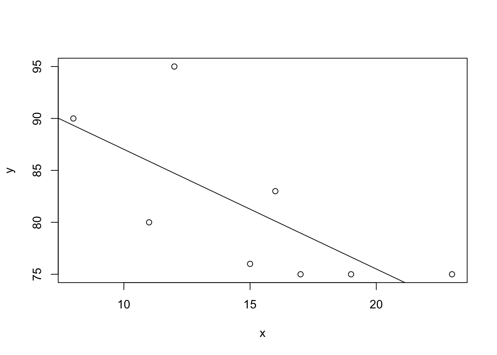

14.2.63 linear regression line
An instructor asked a random sample of eight students to record their study times at the beginning of a course. She then made a table for total hours studied (x) over 2 weeks and test score (y) at the end of the 2 weeks. The table is given below. Complete parts (a) through (f).
\(\sum x = 396, \sum y = 2362, \sum xy = 118330, \sum x^2 = 19870\)(a). Find the regression equation for the data points.
First we need to get the data from the question. (We can import it from Excel)
x<- c(12, 15, 11, 19, 8, 17, 16, 23)
y<- c(95, 76, 80, 75, 90, 75, 83, 75)From formula sheet
\(S_{xx}=\sum(x_i-\bar{x})^2=\sum x_i^2-(\sum x_i)^2/n\)
\(S_{xy}=\sum(x_i-\bar{x})(y_i-\bar{y})=\sum x_iy_i-(\sum x_i)(\sum y_i)/n\)
\(S_{yy}=\sum(y_i-\bar{y})^2=\sum y_i^2-(\sum y_i)^2/n\)
Regression equation: \(\hat{y} = b_0 +b_1x\) where
\(b_1=\frac{S_{xy}}{S_{xx}}\) and
\(b_0 = \frac{1}{n}(\sum y_i-b_1\sum x_i)=\bar{y} - b_1\bar{x}\)
Names of variables
\(S_{xx}: Sxx\)
\(S_{xy}: Sxy\)
\(S_{yy}: Syy\)
First approach, we find linear regression line by using the formula
1.1 we find \(S_{xy}, S_{xx}, S_{yy}\) without finding \(\bar x, \bar y\)
n = length(x)Find \(S_{xy}, S_{xx}, S_{yy}\)
Syy = sum(y*y) - sum(y)^2/n
Sxx = sum(x*x) - sum(x)^2/n
Sxy = sum(x*y) - sum(x) * sum(y) /nSxx## [1] 158.875Sxy## [1] -183.125Syy## [1] 414.8751.2 finding \(S_{xy}, S_{xx}, S_{yy}\) using \(\bar x, \bar y\)
Sxx = sum((x-mean(x))^2)
Sxy = sum((x-mean(x))*(y-mean(y)))
Syy = sum((y-mean(y))^2)Sxx## [1] 158.875Sxy## [1] -183.125Syy## [1] 414.875To find \(b_0\) and \(b_1\) in the regression equation: \(\hat{y} = b_0 +b_1x\), we run
b1 = Sxy / Sxx
b1## [1] -1.152636b0 = mean(y) - b1 * mean(x)
b0## [1] 98.55862Round to two decimal places
round(b1, 2)## [1] -1.15round(b0, 2)## [1] 98.56Second approach, we find linear regression line by using lm() in R
lm(y~x)##
## Call:
## lm(formula = y ~ x)
##
## Coefficients:
## (Intercept) x
## 98.559 -1.153In case that R does not give enough accuracy, we use print()
print(lm(y~x), 15)##
## Call:
## lm(formula = y ~ x)
##
## Coefficients:
## (Intercept) x
## 98.55861526357197 -1.15263571990559Since we have two approaches here, we could do both to double check our answers before submiting.

(b). Graph the regression equation and the data points.
We draw a graph by using plot() and abline(). Abline() takes 2 arguments y-intercept (\(b_0\)) and slope (\(b_1\))
plot(x,y)
abline(b0, b1)

(c) Describe the apparent relationship between the two variables.
Since we have negative slope, when x increasess y tends to decrease which means Test Score tends to decrease as Hours Studied increases

(d) Identify the predictor and response variables.
The predictor variable is x and the response variable is y.
So the predictor variable is Hours Studied and the response variable is Test Score.

(e) Identify outliers and potential influential observations.
“An outlier is an observation that lies outside the overall pattern of the data. In the context of regression analysis, an outlier is a data point that lies far from the regression line relative to the other data points. An influential observation is a data point whose removal causes the regression equation and line to change considerably.”
We can tell from the graph that there is no outlier or potential influential observation.

(f). Predict the score for a student that studies for 15hours.
Since the regression equaation in part a requires rounding the answer to two decimal places
b0 = round(b0, 2)
b1 = round(b1, 2)b0## [1] 98.56b1## [1] -1.15To find predicted score for a student that studies for 15 hours, we run
b0 + 15 * b1## [1] 81.31Round to the nearest whole number as needed
ceiling(b0 + 15 * b1)## [1] 82
Hope that helps!